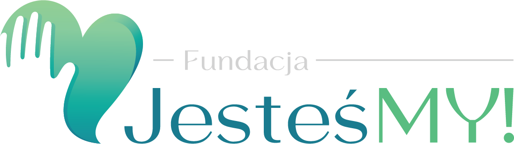
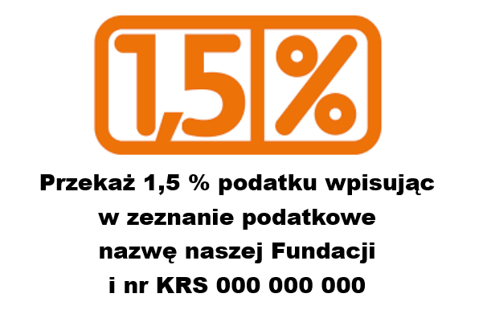
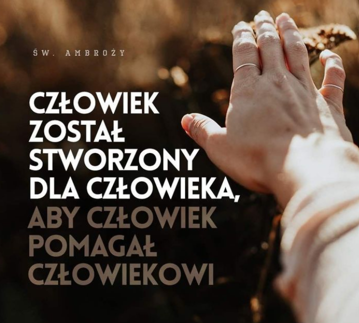

Fundacja JesteśMY
Inicjatywa powstania fundacji JesteśMy pochodzi od osób, które od ponad dekady działają charytatywnie i pracują społecznie. Osób, dla których niepełnosprawność, osamotnienie, starość, wykluczenie i ubóstwo to wystarczające powody do udzielenia mądrej, tzn. skonkretyzowanej pomocy.
Nasza dotychczasowa wielopłaszczyznowa działalność na rzecz osób szczególnie potrzebujących wsparcia wywołała potrzebę zoptymalizowania wszystkich działań i narzędzi, a także opracowania konkretnego planu pomocy, aby zakres jej był nie tylko większy, ale także realnie bardziej celowy, a efekt rokujący. (Czytaj dalej)


Ważne Wydarzenia
xxxxx